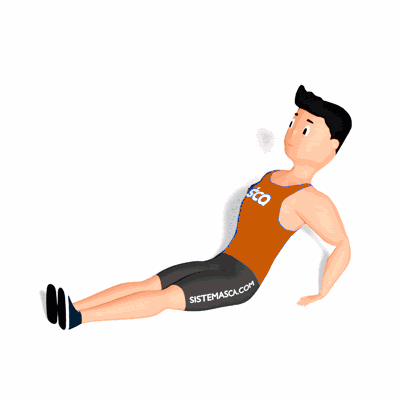

Abdominal Canoa

É um exercício de isometria que trabalha os músculos da região do abdome, principalmente a coordenação e resistência do core.
Ficha Técnica
Tipo: Funcional
Grupo Muscular: Abdome
Aparelho: Nenhum
Músculos: Nenhum
Como realizar
- Deitado, braços estendidos atrás da cabeça, pernas estendidas, pés unidos;
- Com o abdômen bem contraído, dê um impulso com o tronco, elevando as pernas e os braços (o corpo deve ficar no formato de uma canoa);
- Mantenha a posição pelo tempo predefinido pelo professor.
 RC STORE
RC STORE